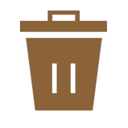
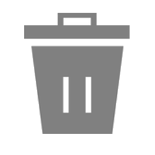
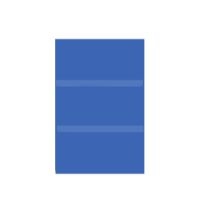

| Resíduo | Tipo |
|---|
O que é a Coleta Seletiva Solidária UFSM?
É a coleta dos resíduos recicláveis gerados na UFSM em cumprimento ao Decreto nº 5.940/2006 e tem como parceiros as Associações de Selecionadores de Santa Maria.
Início das atividades: 6 de junho de 2016.
Pontos de recolhimento no campus: 60
Responsáveis pela gestão: Setor de Planejamento Ambiental e COMPLANA.
Como funciona a coleta?
A coleta ocorre todas às segundas, quartas e quintas-feiras, a partir das 8 h, exceto nos feriados.
Cada Associação é responsável pela coleta durante uma semana havendo rodízio ao longo do ano.
Veja aqui rota e calendário da coleta seletiva.
O que a coleta seletiva recolhe?
-
 Resíduos RecicláveisOs resíduos recicláveis (contêineres verdes) são papéis/papelão, metais, vidros e plásticos. Esses resíduos são recolhidos semanalmente e destinados às Associações de Selecionadores. Cabe às Associações realizar a triagem, armazenamento e venda dos materiais.
Resíduos RecicláveisOs resíduos recicláveis (contêineres verdes) são papéis/papelão, metais, vidros e plásticos. Esses resíduos são recolhidos semanalmente e destinados às Associações de Selecionadores. Cabe às Associações realizar a triagem, armazenamento e venda dos materiais. -
Resíduos OrgânicosOs resíduos orgânicos são coletados diariamente nos restaurantes e lancherias e enviados à unidade de compostagem do Colégio Politécnico da UFSM.
-
RejeitosOs rejeitos (contêineres pretos ou cinzas) são recolhidos pela Coleta Pública realizada pela Prefeitura Municipal e são destinados ao aterro da cidade.
-
Resíduos EletroeletrônicosPonto de entrega voluntária (PEV) somente para o descarte de eletroeletrônicos SEM PATRIMÔNIO.
Parceria: Químea Soluções Ambientais
Locais de entrega: CTISM, Colégio Politécnico, RU I, CT- prédio 07, CCNE - prédio 16ª e CCR - prédio 44 -
Resíduos EspeciaisNo sentido de ampliar as alternativas para destinação correta de resíduos tanto gerados pela UFSM quanto pela comunidade em geral, foram firmadas parcerias e/ou desenvolvidos projetos com instalação PEVs (pontos de entrega voluntária) para:
Óleo De Fritura Usado
Destinação: fabricação de biodiesel
Parceria: Fundação M’Oã e Recóleo – Projeto Saúde da Água
Pontos de entrega:
CCNE - prédio 13
CE - prédio 16
CCS - prédio 26
CAL - prédio 40
CCR - prédio 42
CEFD- prédio 51
Colégio Politécnico - prédio 70F
CCSH - prédio 74C
RU I e RU II
Reitoria Campus Santa Maria
HUSM subsolo
Centro da Cidade de Santa Maria
Antiga Reitoria
Prédio de Apoio (abaixo das capelas do HC)Esponjas De Louça
Destinação: produção de madeira plástica
Parceria: Programa da ONG Terracycle e Scotch Brite
Não depositar esponjas que entraram em contato com MATERIAIS PERIGOSOS E/OU TÓXICOS.
Pontos de entrega:
CCNE - prédio 13
CE - prédio 16
CCSH - prédio 74C
RU I
Reitoria Campus Santa Maria
Antiga ReitoriaBanners de Lona
Destinação: confecção de bolas, sacolas, carteiras e outros produtos
Parceria: AAPECAN Santa Maria
Pontos de entrega:
Elevador - prédio 16B
Sala 2220 - prédio 18
Sala 3224 - prédio 19
AAPECAN Santa MariaLogística Reversa
Tonners e cartuchos de tinta de impressora: devolver ao Almoxarifado Central.
Embalagens plásticas de óleo combustível e lubrificante: deixar no posto de troca mediante comprovante de destinação do óleo e da embalagem.
Lâmpadas fluorescentes: A UFSM NÃO recebe lâmpadas oriundas de particulares. Solicitar recolhimento ao Setor de Elétrica e Eletromecânica – Nilton Irineu B. Rosso. Contato: 3220-8363 ou 99976-5167
Localização dos containers
Quem faz a coleta?
Associação de Selecionadores de Materiais Recicláveis (ASMAR), Associação de Materiais Recicláveis Pôr do Sol (ARPS), Associação de Reciclagem de Seletivo Esperança (ARSELE) e Associação Noêmia Lazzarini.
Informações Adicionais
Site da Coleta Seletiva Solidária
Site da UMA (Universidade Meio Ambiente)
Email: uma@ufsm.br